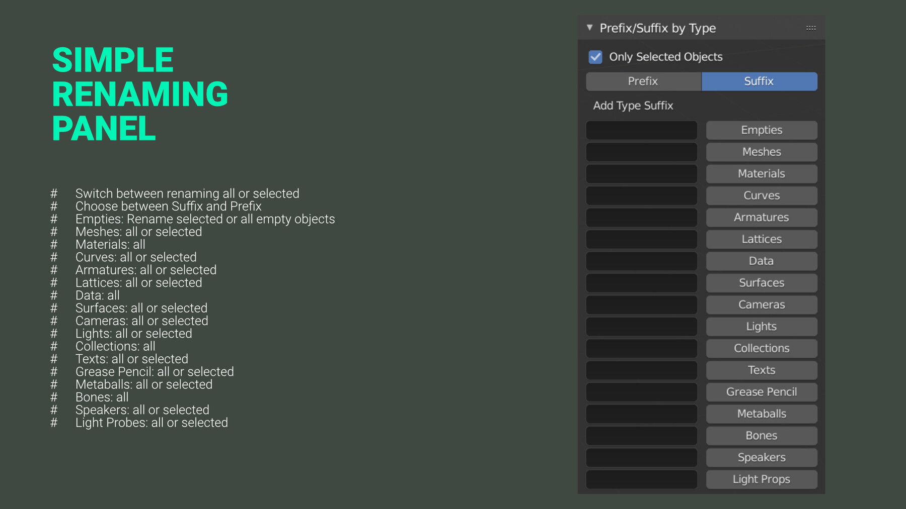

Renaming Panel
The renaming panel is the heart of the application. It provides you with a simple and an advanced UI option. It can either be found in the properties panel or by pressing the user defined hotkey.

- Choose which kind of objects you want to rename:
- Changes affect selected or all
- Replace names with a new name
- Search and replace
- Search and select
- Match case for the search and replace
- Use regular expressions to improve your search
- Add prefixes
- Add suffixes
- Numerate objects
- Trim string
- Data: Keeping the object data names clear and organized can be painful in blender, this button simply renames the data according to the objects and adds a specified suffix.
Type Suffix Prefix
The suffix prefix panel is collapsed as it is not used as regularly as the main renaming panel. The panel is used to add prefixes or suffixes based on the object type. It's a quick way to add e.g., "_geo" to meshes, "_empt" to empties, and "_cam" to cameras with one single click. The presets allow you to easily save different naming conventions for different projects.


- Choose between Suffix and Prefix
- Geometry: all meshes
- Material: all materials
- Empty: all empty objects
- Curve: all curves
- Armature: all armatures objects (not bones)
- Group: all groups
- Lattice: all lattices
- Data: all object data
- Surfaces: all surface objects
- Cameras : all cameras
- Lights: all lights
- Bones: all bones